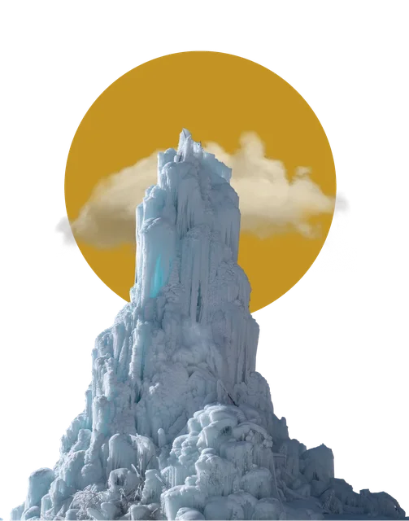
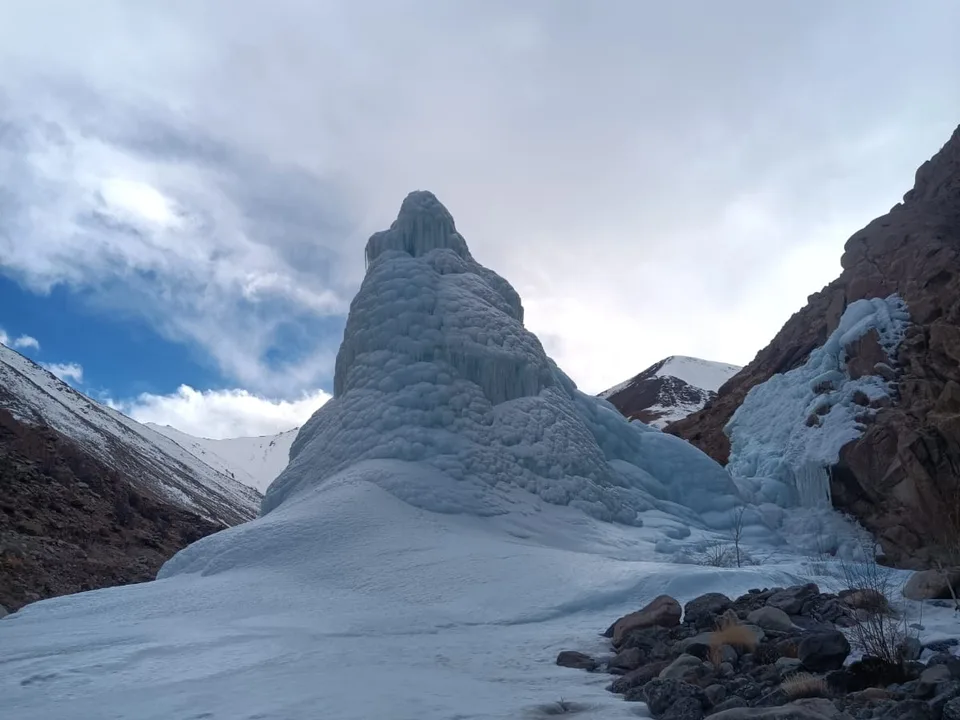
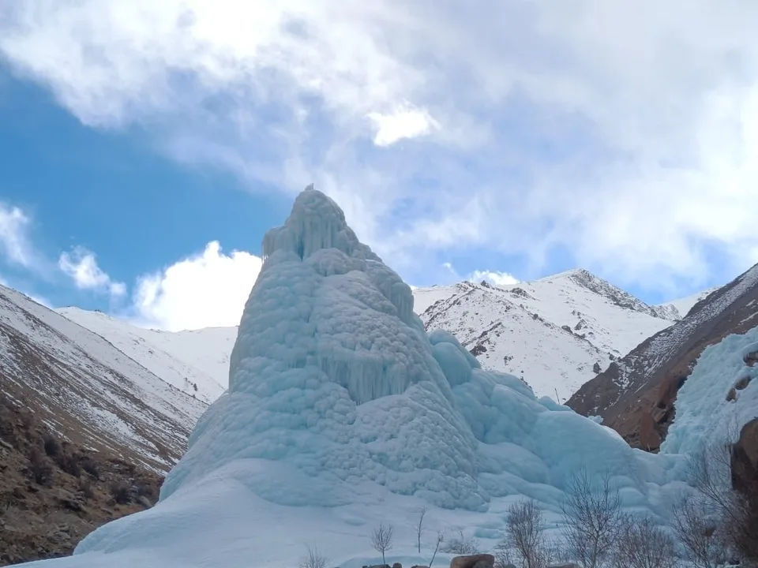
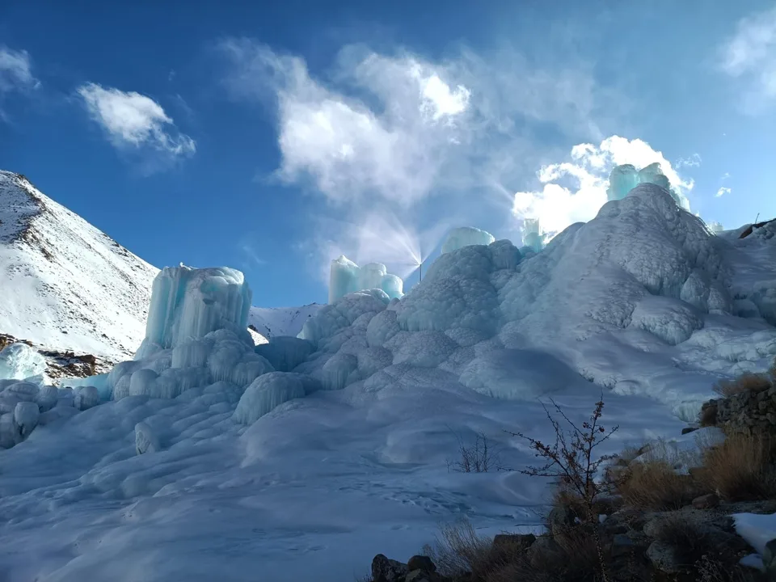

Winter Batch 2026-27
6-month residential course
The Himalayan region is experiencing rapid environmental change,
with implications for water availability, mountain ecosystems,
agriculture, and the livelihoods of local communities. In
high-altitude cold deserts such as Ladakh, where precipitation is
limited and water availability is closely linked to seasonal snow
and glacier melt, developing locally appropriate water-management
solutions is increasingly important.
The Ice Stupa Fellowship at the Himalayan Institute of
Alternatives, Ladakh (HIAL) aims to bring together students and
emerging researchers from engineering, physical sciences,
environmental sciences, architecture, and related disciplines to
explore innovative technological solutions for water-related
challenges in the Himalayas.
The fellowship will use
Ice Stupa technology as a starting point for
interdisciplinary research, engineering, experimentation, and
innovation. Participants will engage with real-world
problems through field-oriented research, prototyping, modelling,
and testing, while exploring how scientific knowledge and
engineering design can be adapted to challenging mountain
environments.
Ice Stupas are artificial ice structures developed to store water in frozen form during winter and release it as they melt in spring. In suitable locations, this approach can help make water available during periods when agricultural demand begins to rise but natural water sources may be limited.
The technology also raises important research and engineering questions. How can water be transported and frozen efficiently under varying climatic conditions? How can artificial ice systems be designed for different terrain and water requirements? What roles can sensors, automation, predictive modelling, and new materials play in improving their performance?
These questions extend beyond Ice Stupas themselves. They connect to broader challenges in mountain hydrology, cryosphere research, environmental monitoring, structural engineering, and climate-responsive infrastructure.
The fellowship seeks to create a learning and research environment in which participants can investigate these questions and develop solutions grounded in scientific understanding and local realities.
The fellowship aims to:
The fellowship will explore the following themes:



During the fellowship, participants will engage with practical research and engineering challenges through activities such as:
People only from Himalayan region in India and Nepal & Bhutan, aged 23 to 30, with relevant academic backgrounds are eligible to apply, including those studying:
We are also open to those people beyond the above background to apply but having deep interest and keen in working with Artificial Glaciers systems in their own regions to help community facing water scarcity.
The Ice Stupa Fellowship offers an opportunity to connect academic knowledge with real-world technological challenges in a distinctive Himalayan environment.
Fellows will have the opportunity to:
At HIAL, the fellowship will emphasise learning through engagement with real problems. Participants will be encouraged to question existing approaches, examine evidence, test ideas, learn from past experiments, and refine their solutions.
The programme brings together scientific inquiry, engineering practice, environmental understanding, and interdisciplinary collaboration. Its central premise is that meaningful technological innovation emerges when rigorous research is connected to the conditions in which a technology must actually function.
The Ice Stupa Fellowship seeks to nurture a community of emerging researchers and innovators who can contribute to the development of appropriate technologies for the Himalayan region and other challenging environments.
By connecting Ice Stupa technology with wider questions in hydrology, cryosphere science, engineering, sensing, automation, and design, the fellowship aims to encourage solutions that are scientifically informed, context-sensitive, and responsive to the realities of mountain environments.
Join us in exploring how science, engineering, and interdisciplinary collaboration can contribute to more resilient water systems in the Himalayas.
For FAQ click here